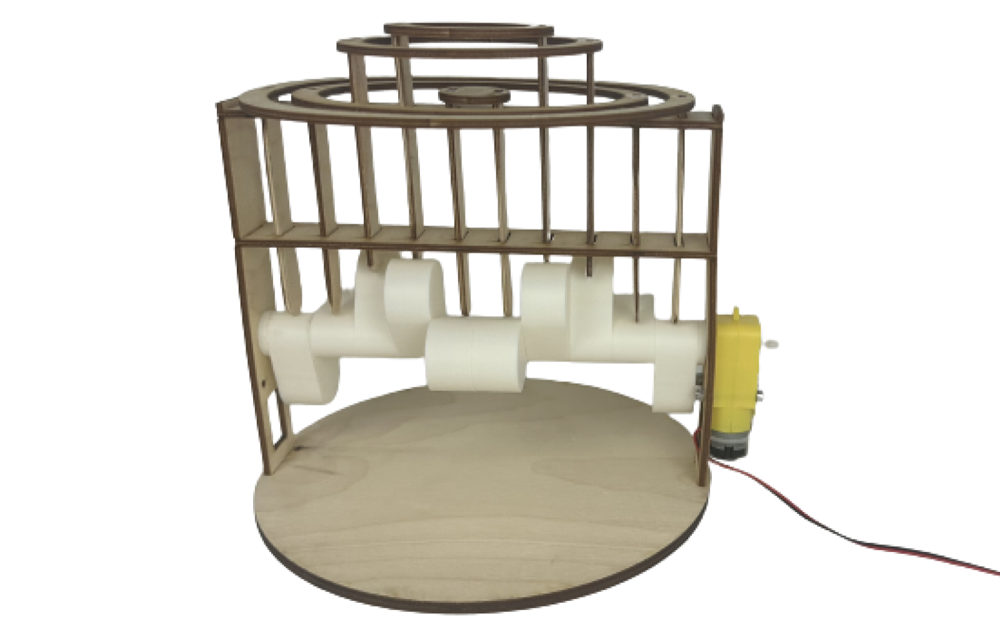
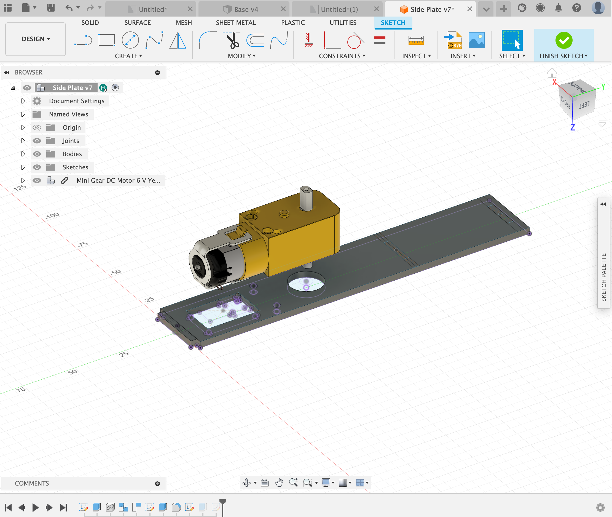
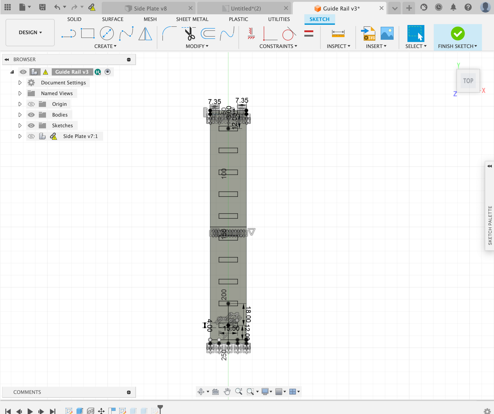

Kinetic Sculpture
Overview:
For my kinetic sculpture I wanted to create something with a CAM shaft. I was interested in designing one and it was something that would be new to me. In the end I settled on creating a wave/water droplet sculpture.
Design:
I started with the design of the frame, specifically the base. I decided on an outer radius of 200mm and an inner radius of 180mm. Next I made slots for the two side plates that would actually hold up the structure. I decided on a length of 25mm and a width of 2.85mm. The wood is 3mm thick but I added a kerf of 0.15mm and some tolerance for a good fit.
Next I started on the design of the side plates. This component would hold the motor as well as the guide rails for all of the pieces. I started by positioning the motor and projection the geometry onto the sketch. Next I defined the height of the side plate and I made slots for the guide rails to fit into. I decided on a height of 160mm for the side plate and all of the slots were 2.85mm as I added a 0.15mm kerf.
The guide rails are very important to this design as they hold the pieces that move up and down in place when the camshaft spins. It is important to have two guide rails as it restricts the horizontal motion of the pieces. The slots in the guide rail have to have the right tolerances as friction between the guide rails and the moving pieces would not be ideal. The total length of the guide rail was 196.96mm as that was the distance between the slots on the base. The slots for the moving pieces were 15.5mm by 4mm which provided enough clearance to move without friction.
The guide rails are very important to this design as they hold the pieces that move up and down in place when the camshaft spins. It is important to have two guide rails as it restricts the horizontal motion of the pieces. The slots in the guide rail have to have the right tolerances as friction between the guide rails and the moving pieces would not be ideal. The total length of the guide rail was 196.96mm as that was the distance between the slots on the base. The slots for the moving pieces were 15.5mm by 4mm which provided enough clearance to move without friction.
After I decided on the dimensions of the slots for the plunger, I used the rectangular pattern tool to duplicate all of the slots. Later this was very helpful when designing the different sized rings.
The plunger is the piece that moves up and down when the camshaft spins. I designed this piece to fit in the slot on the guide rails without any friction. The plunger also has a tab on the top to be able to fit the rings. All of the plungers are the same and I planned it out to have 10 total. They are 93mm long and 14.5mm in width. The wood is also 3mm thick so the plunger has a 1mm tolerance on all sides as the slot on the guide rail is 15.5mm by 4mm.
Next I designed the rings, I used the rectangular pattern values on the guide rails to place the slots on the rings. All of the rings had two plungers connected to it on opposite sides. This later would affect how the cams are placed on the camshaft. Once I placed all of the tabs on the rings I defined the inner and outer radii of all the rings.
Lastly I designed the camshaft, I started with a hexagonal axle. My idea was that the cams would have a hexagonal hole and would fit onto the axle, however they could all be offset by turning them 60 degrees. This would make it so I could design one cam and print it 10 times. Apart from the cam and the axle, I also needed cam spacers to fill the gaps that the cams would not. I decided to 3D print this part as it made the process much easier. The hexagonal axle has a radius of 7.5 and has an insert for the motor shaft on one end. The length of the axle is 193mm which allows it to go through both side plates.

For the cam, I started by adding the hexagonal hole in the middle, being sure to add a little tolerance for the 3D printer. Next I created a 20mm circle around the hexagon, then I created a 30mm circle tangent to the 20mm circle. This created the shape I was looking for, which was an offset ellipse. I then extruded it 18mm and accounted for 10 to fit on the axle.
Lastly I needed to add a cam spacer at the end of the camshaft as there were gaps that would make it so that the shaft would rattle when spun. For this I used the same hexagon measurements as the cam and the same 20mm diameter on the outside of the hexagon. I extruded 3.4765mm as that was the size of the gap.
This was the final assembly for the sculpture, I did not include the plungers or the rings in CAD due to time reasons however I was confident that those parts were going to work.
Once I designed the sculpture, I laser cut/3D printed all of the pieces and started to assemble the parts one by one. I first screwed the motor into the side plate and attached the side plates onto the base. Then I added the guide rails and the frame was complete

Next I put together the camshaft, I staggered each cam 60 degrees and mirrored the position of the cams from the halfway point on the axle. This cam setup would provide a the motion I was looking for.
Finally I put two plungers into each of the rings and dropped the rings into their respective slots.
Final Product: